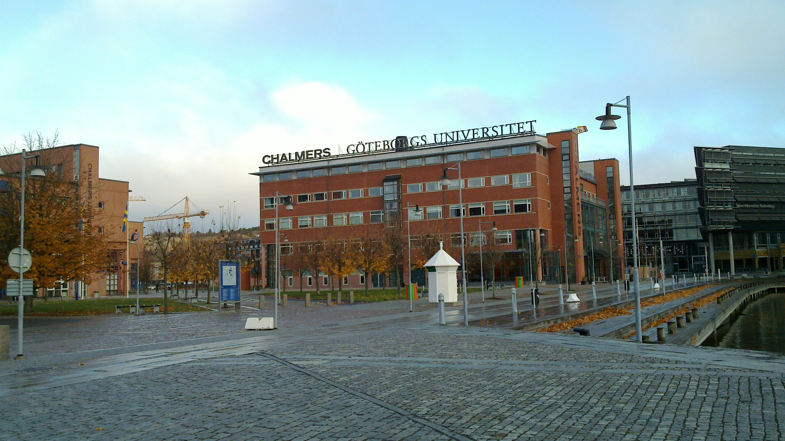
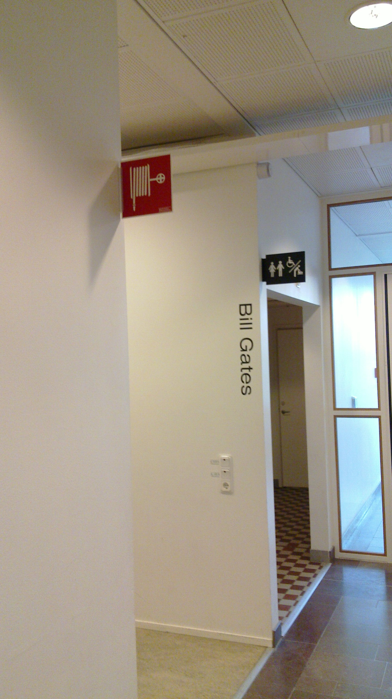

感謝您對「自由軟體鑄造場」的支持與愛護，十多年來「自由軟體鑄造場」受中央研究院支持，並在資訊科學研究所以及資訊科技創新研究中心執行，現已完成階段性的任務。 本網站預計持續維運至 2021年底，網站內容基本上不會再更動。
也紀念我們永遠的朋友 李士傑先生（Shih-Chieh Ilya Li）。
也紀念我們永遠的朋友 李士傑先生（Shih-Chieh Ilya Li）。
FSCONS2010 會後報導-從根本上解決問題的思想革命
Created at Wednesday, 08 December 2010 06:03 Last Updated on Tuesday, 11 January 2011 18:45
「Free Society Conference and Nordic Summit (FSCONS2010)」是一年一度由北歐自由軟體開發者與自由文化推行者所舉辦的分享盛會，歷年會議的場地均選擇在瑞典哥德堡這個交通便捷、氣候宜人與高度國際化的海港都市。就像大家所熟知的，北歐國家在國家結構與社會文化方面，有其別於一般歐美國家的獨到理念，其奉行完善的社會照護主義，但亦著重獨立自主式的國民人格養成教育。而參與此次 FSCONS2010 所帶來的最大收穫，便是透過斯堪地納維亞實用主義的觀察角度，得以重新審視許多在國內久懸難解的法制與文化議題，並從中一窺北歐式「釜底抽薪」思考模式的堂奧。「從根本上解決問題」的實用主義
從 Lars Sandman 主講的「Conflicting Values and Norms」開始，議程的內容每每帶給我這般來自東方社會參與者很大的文化衝擊，在北歐、對於規範有效性的解讀，他們坦然從問題的根源處進行反思，這些因為新穎科技發展所帶給人類社會的道德爭議，被由微至著的從群體立場到個人角度進行分析。所謂「北歐式的實用主義」，代表所有的爭議性議題（issue）都應該回歸實用性與合用性的根本面來做思考，而不是在第一時間先進行「現行法律規定」的類推解釋，這般的處世態度泰半來自於北歐人深根於民族性裡的務實特質：唯有能夠解決問題的方案，才是好方案（Whatever works, it works.）。所以對於科技發展所帶來的新式議題，首要考慮的要件是廣土眾民的普遍福祉：對於新式科技的運用，所受益者究竟是多數群眾亦或是少數族群？而在裨益多數人的過程中，少數人被體制剝奪的權利，又應該得到哪些配套機制的觀注與保護？而唯有能夠妥善處理上述問題的規範，才會是符合社會正義的好方案（註一）。

▲ FSCONS歷年的舉辦場所：瑞典哥德堡 Chalmers 科技大學。
「從歷史發展找尋出路」的學習主義
接著、在 Johan Söderberg（註二）所引導的「A Labour Process Perspective on the Development of Free Software」議程裡，轉而從歷史分析的角度，討論近十年來資訊科技的發展趨勢，特別是針對自由軟體開發方式的未來性進行預測與評判。就像我們東方「鑑古以知今」的道理一般，其認為資訊科技近 30 年的發展趨勢與近百年的民主政治演變流程並無二致，核心的相似處在於掌控程式碼撰寫的權力，類同政治權力一般，由少數階級漸漸的往多數民眾遞嬗，而這樣的過程已然是無可逆轉。當代、透過自由軟體程式原始碼的散布，編寫程式的權力不再那麼容易被單一的經濟實體所掌控（註三），然而、軟體編寫的權力下放固然為時代的趨勢，但日漸增多的自由軟體專案也並非完全是增益當代資訊科技發展的靈丹妙藥，舉例來說、良莠不齊的開發者確實也對軟體的開發品質帶來了若干的困擾與後續問題，針對這些不盡完美的地方，Söderberg 提出的觀點為：以社群參與、鼓勵學習的立場來樹立自由軟體專案的操作典範，所謂的操作典範，從人類交誼的角度來說，其實就是群體成員透過不斷學習與磨合的過程，最後找到善待彼此的互動模式。從這個角度來觀察，自由軟體的發展與自由文化的推展，可以說是符合演化法則的自然趨勢，演化過程所帶來的影響固然不盡完美，但也是可以透過不斷的調解與修正，找尋到更貼近眾人利益的和諧之道。

▲ 以全球資訊科技發展重點人物與作業系統命名的研究室與公共空間。
「以互利代換完全自利」的分享主義
Christian Villum 所分享的議程「Please copy this record to all of your friends」，與及 Mathias Klang 所提供的「File Sharer? Go to Jail!」議題，恰可以為 FSCONS 三天的演出做出最完美的註腳，那就是奠基於實用理念、歷史演變的分享主義。統括的來說，北歐的實用主義來自於其深殖於民族習性裡的維京精神，那是從荒野寒地裡鍛練出來的生存意志，凡事以生存與實用為第一依歸，在生命獲得存續、物品實用性獲得確立之後，才去論以美觀與花彩等下一順位的需求和滿足。在北歐式的思想理念裡，第一要件為「求生存與重實用」，而這些生存與實用的條件，自然也要隨著歷史演變與時代推衍而有所調整與異動，如果舊時代的規範看重的是以防衛觀點來保障個人權利，那麼這樣的規範在舊時代裡並沒有任何過錯，但因現今邁向資訊時代，若能強化程式碼與其他著作物互利式的交換機制，反而能夠給人類族群帶來最大的群體利益，此時、便該適時的揚棄「與現實環境扞格不齊」的舊思維，並積極的修改規範以符合現實環境，這樣的適時修正，才是符合演變法則且調和眾人利益的康莊大道。
▲ 維京造型玩偶的街角一覽。
與其他國內外分享式的自由軟體研討會相較，FSCONS2010 顯然在哲學理念方面有著特別顯著的偏重，這大抵也是呼應主辦人 Chalmers 科技大學教授 Jonas Öberg 在會議開始便亟力闡揚的想法：人類看待事物的態度決定了自身演化的方向，在北歐、新觀念若是能夠成功的導入人心，後續就能一步步建立出新的價值與展開新的循環，而唯有透過不斷對話、衝突、分享，調和的步驟，這些觀念演化的結果才能為全體的人類帶來最適切的群體利益，並且透過這樣的過程，參與者也將為他們的人生帶來新的意義和找到新的方向。與這樣的富含生命哲學的寬闊視野相較，國內凡事直接導向利益分析的評判方式，就顯得狹隘且缺乏論理基礎，若任由這樣短視的評判方式引導我們的規範演變與產業發展，也許一開始、能夠爭逐到短期利益，但長遠來看，終究是失去了更多豐碩的機會與未來。
註一：瑞典國內成立了全球第一個以廢除專利、改革著作權法為核心理念基礎的政黨組織-盜版黨（Piratpartiet）：https://www.piratpartiet.se/international，2009 年 4 月，該政黨因海盜灣網站經營者被判刑事件，黨員人數快速增加，並於是年歐洲議會選舉中在瑞典獲得 7％ 以上選票，其後在歐洲議會擁有一個席位，並躍升為瑞典第三大黨。
註二：Johan Söderberg 為瑞典哥德堡 Chalmers 科技大學教授，曾擔任歐洲自由軟體基金會副主席多年，並主辦歷年的「Free Society Conference and Nordic Summit」，其個人網址連結如右：https://jonasoberg.net/about-me。
註三：Chalmers 科技大學的 IT 學院，慣以全球資訊科技發展重點人物與作業系統的名稱，來命名各間研究室與公共空間，如上圖所示、一樓座落有一間以 Bill Gates 為名的廁所，亦有其他以 Free BSD、Open BSD 命名的空間，從這些舉措可以看出 Chalmers 科技大學對於自由文化的支持，以及其對於壟斷式科技產業的負評態度。
Special


Open Source Software Foundry‧ Best Viewed with IE7.0 or Firefox2.0 above, 1024x768 Resolution. E-Mail：contact@openfoundry.org
Address：No.128, Sec.2, Academia Rd., Institute of Information Science, Academia Sinica, Nangang District, Taipei City 11529, Taiwan (R.O.C).
Privacy Policy. Terms-of-use
Address：No.128, Sec.2, Academia Rd., Institute of Information Science, Academia Sinica, Nangang District, Taipei City 11529, Taiwan (R.O.C).
Privacy Policy. Terms-of-use